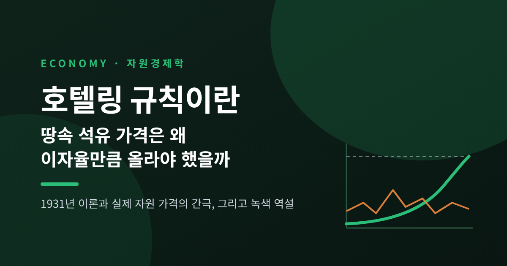
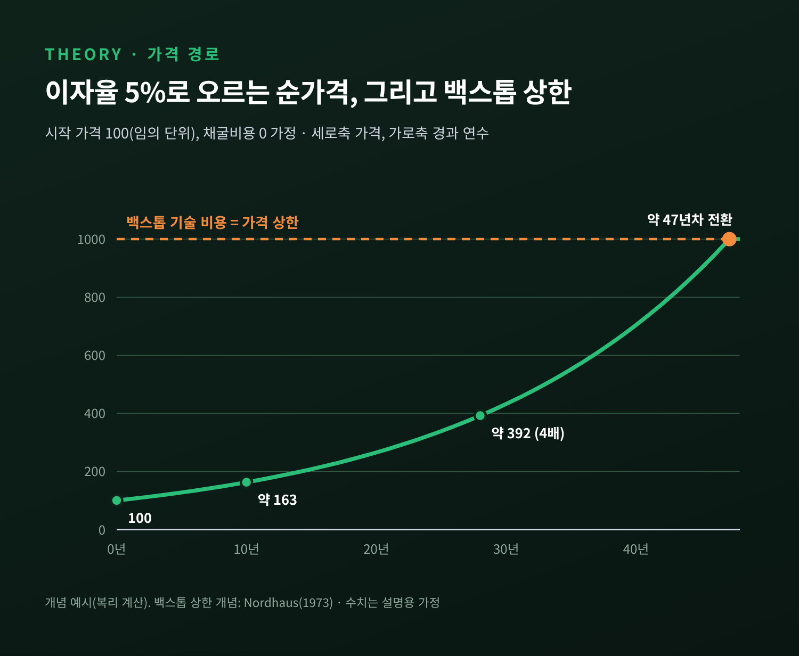
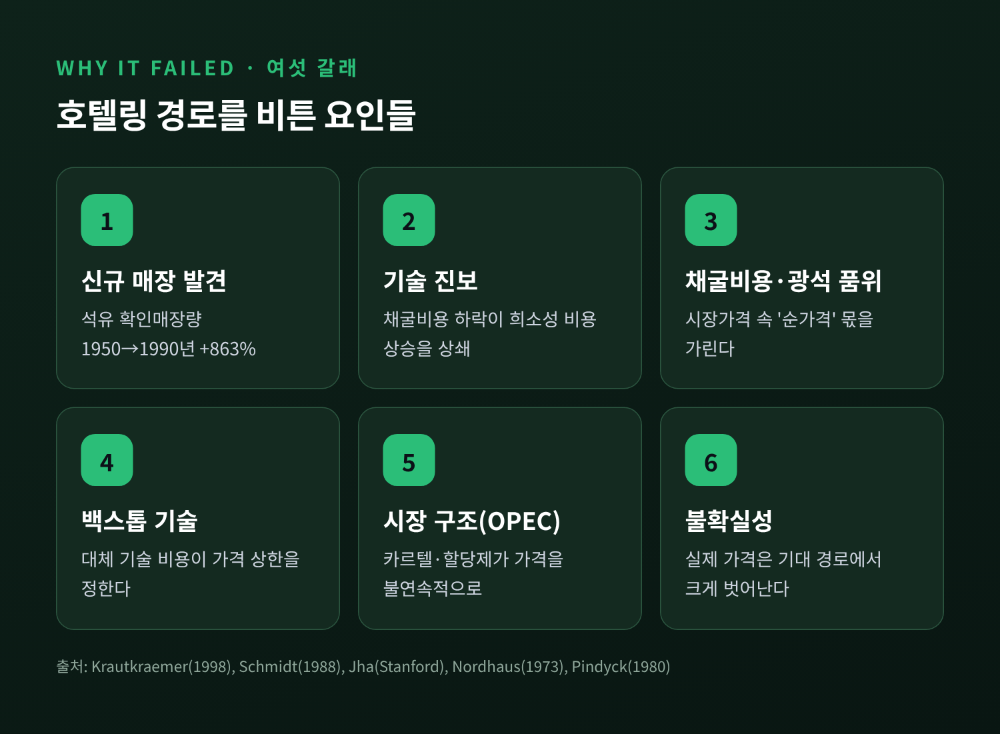
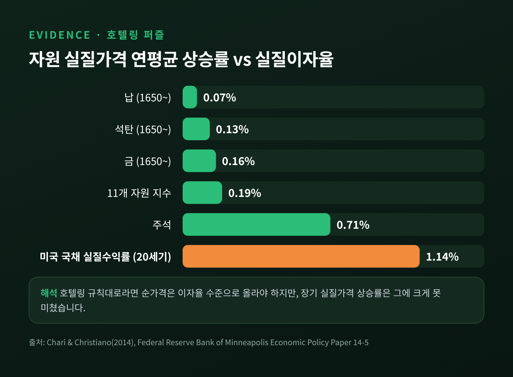
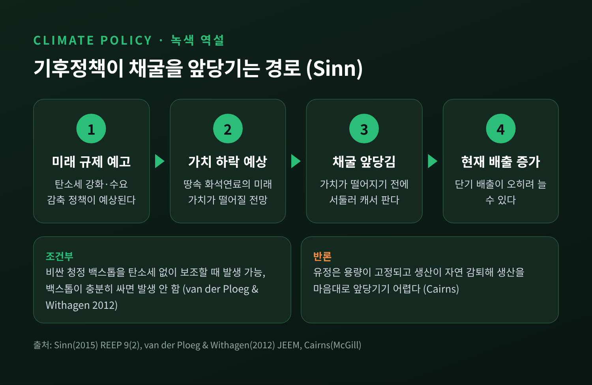

호텔링 규칙이란 — 땅속 석유 가격은 왜 이자율만큼 올라야 했을까

이번 글에서는 경제학자 해럴드 호텔링이 1931년에 제시한 '호텔링 규칙'을 정리해 보겠습니다.
석유나 광물처럼 쓰면 사라지는 자원의 가격이 왜 이자율만큼 올라야 한다고 보았는지, 그리고 실제 가격은 왜 그렇게 움직이지 않았는지를 차례로 살펴봅니다.
먼저 세 줄로 요약하면 이렇습니다.
- 호텔링 규칙: 땅속 자원은 일종의 자산이므로, 채굴비용을 뺀 '순가격'은 이자율과 같은 속도로 올라야 균형이 됩니다.
- 현실: 수백 년치 데이터를 보면 자원 가격 상승률은 이자율에 한참 못 미쳤습니다. 신규 매장 발견, 기술 진보, OPEC 같은 시장 구조, 불확실성이 경로를 비틀었습니다.
- 그래도 이 논리는 살아 있습니다. 탄소세가 오히려 채굴을 앞당길 수 있다는 '녹색 역설' 논쟁의 뿌리가 바로 여기에 있습니다.
■ 1931년, 고갈성 자원에 대한 질문
호텔링의 논문 제목은 「고갈성 자원의 경제학(The Economics of Exhaustible Resources)」입니다.
1931년 4월 『저널 오브 폴리티컬 이코노미』 39권에 실렸습니다.
논문은 자원이 사라져 간다는 걱정이 '보전 운동'을 낳았다는 문장으로 시작합니다.
당시에도 사람들은 석유와 광물이 바닥날까 두려워했습니다.
호텔링은 그 걱정을 감정이 아니라 가격의 문제로 바꿔 물었습니다.
한 번 캐면 다시 생기지 않는 자원을, 언제 얼마나 캐는 것이 합리적인가.
그리고 그 선택은 가격에 어떤 흔적을 남기는가.
이 질문에서 나온 답이 오늘날 '호텔링 규칙'이라 불리는 명제입니다.
경제학자 로버트 솔로는 1974년 강연에서 이를 이렇게 요약했습니다.
자원 소유자는 광석의 순가격이 이자율과 같은 속도로 지수적으로 오를 것을 기대해야 한다는 것입니다.
■ 땅속 석유는 '이자를 낳지 않는 예금'과 같습니다
호텔링 규칙의 핵심은 차익거래 논리입니다.
유전을 가진 사람을 한 명 떠올려 보시면 쉽습니다.
그 사람 앞에는 두 가지 선택지가 있습니다.
하나는 지금 석유를 캐서 팔고, 그 돈을 은행에 넣어 이자를 받는 것입니다.
다른 하나는 석유를 땅속에 그대로 두었다가 나중에 파는 것입니다.
땅속 석유는 이자를 주지 않습니다.
보유한 대가는 오직 '나중에 더 비싸게 팔 수 있다'는 기대뿐입니다.
여기서 균형이 생깁니다.
순가격이 이자율보다 빨리 오른다면 누구도 지금 팔지 않습니다. 공급이 줄어 오늘의 가격이 올라갑니다.
반대로 이자율보다 느리게 오른다면 모두가 서둘러 팝니다. 오늘의 가격이 내려갑니다.
결국 순가격이 정확히 이자율만큼 오를 때에만 소유자가 '지금'과 '나중' 사이에서 망설이게 됩니다.
여기서 순가격이란 시장가격에서 한 단위를 더 캐는 데 드는 비용(한계 채굴비용)을 뺀 값입니다.
경제학에서는 이를 희소성 지대, 로열티, 혹은 잠재가격이라고도 부릅니다.
쉽게 말해 '자원이 귀하다는 사실 자체'에 매겨진 값입니다.
■ 숫자로 보면 이렇게 움직입니다
경제학 교재에 자주 실리는 예시를 하나 옮겨 보겠습니다.
세계 석유 수요가 '가격 = 1,000 − 0.000001 × 수량(배럴)'로 주어지고, 2010년 말 남은 매장량이 약 292억 배럴이라고 가정합니다.
이자율은 5%입니다.
이때 호텔링 경로를 따르면 2011년에는 9억 배럴이 배럴당 100달러에 팔립니다.
가격은 해마다 5%씩 올라 2044년 무렵 약 500달러가 되고, 남은 양은 40억 배럴 아래로 줄어듭니다.
마지막 900만 배럴은 2058년, 991달러에 팔립니다.
수요가 0이 되는 가격(1,000달러)에 닿는 순간 자원도 정확히 바닥나도록 짜인 경로입니다.
5%라는 숫자가 얼마나 큰지도 짚어 둘 만합니다.
5%로 오르면 가격은 약 14년마다 두 배가 됩니다.
100달러가 10년 뒤 약 163달러, 28년 뒤에는 약 400달러가 되는 셈입니다.

이 경로에 천장을 씌운 사람이 윌리엄 노드하우스입니다.
그는 1973년 브루킹스 논문에서 '백스톱 기술'이라는 개념을 도입했습니다.
수요를 다 감당할 수 있고 자원 기반이 사실상 무한한 대체 기술을 뜻합니다.
당시 그가 예로 든 것은 증식로, 핵융합, 전기-수소 기술이었습니다.
백스톱이 있으면 자원 가격은 그 기술의 비용 이상으로 오를 수 없습니다.
그래서 오늘의 로열티는 '전환 시점의 백스톱 비용'을 현재로 할인한 값이 됩니다.
전환 전까지는 이자율로 오르다가, 전환 이후에는 더 오르지 않는 구조입니다.
■ 실제 가격은 그 길을 따르지 않았습니다
이론은 깔끔합니다. 문제는 데이터입니다.
미니애폴리스 연방준비은행의 V. V. 차리와 로런스 크리스티아노는 2014년 보고서에서 11개 자원의 장기 가격을 살폈습니다.
납, 석탄, 금의 실질가격은 1650년 이후 연평균 각각 0.07%, 0.13%, 0.16% 오르는 데 그쳤습니다.
가장 근접한 주석도 0.71%였습니다.
같은 기간 비교 대상으로 삼은 미국 국채의 20세기 평균 실질수익률은 1.14%였습니다.
11개 자원을 묶은 기본 지수는 연 0.19%로 유의한 상승이 없었습니다.
저자들은 이를 '호텔링 퍼즐'이라고 불렀습니다.
채굴비용을 넣어 보아도 해결되지 않았습니다. 데이터에 맞추려면 비용이 음수가 될 만큼 빨리 떨어져야 했기 때문입니다.

다른 연구도 비슷한 그림을 보여줍니다.
샌프란시스코 연준의 로널드 슈미트는 1988년 구리·납·철·아연·석유의 1870~1986년 실질가격을 분석했습니다.
유의한 추세는 없었고 변동성만 컸습니다.
가격 변화를 이자율로 설명하려는 회귀에서도 계수는 0과 다르지 않았고, 부호마저 반대였습니다.
많은 광물의 실질가격이 100년 전 수준 근처에 머물러 있었습니다.
유명한 일화도 있습니다.
1980년 경제학자 줄리언 사이먼과 생물학자 폴 에얼릭은 크롬·구리·니켈·주석·텅스텐 다섯 금속에 각 200달러씩 걸었습니다.
10년 뒤 실질가격이 내리면 사이먼의 승리였습니다.
1990년, 다섯 금속 모두 값이 내렸고 에얼릭은 576달러를 보냈습니다.
다만 1900년 이후 10년 단위로 다시 계산해 보면 두 사람이 이긴 횟수는 대략 반반이었다고 합니다. 10년짜리 내기는 장기 추세를 가리기엔 짧은 시험이었던 셈입니다.
한 가지는 균형 있게 덧붙여야 합니다.
모든 연구가 '추세 없음'이라고 말하지는 않습니다.
데이비드 잭스의 장기 상품가격 연구는 1950년 이후 실질 상품가격이 완만하게나마 올랐다고 봅니다.
특히 에너지·금속처럼 땅속에서 캐는 상품은 장기적으로 오르고, 곡물처럼 재배하는 상품은 내렸다고 분석했습니다.
그러나 잭스 스스로 결과가 기준연도와 가중치에 크게 좌우된다고 밝혔습니다.
그리고 어느 쪽이든, 해마다 이자율만큼 꾸준히 오르는 경로와는 거리가 멉니다.
■ 무엇이 경로를 비틀었을까
경제학자들은 이 간극을 설명하려고 오랫동안 이론을 보완해 왔습니다.
제프리 크라우트크레머는 1998년 『저널 오브 이코노믹 리터러처』 리뷰에서 탐사, 광석 품위의 차이, 기술 진보, 자본 투자를 핵심 요인으로 꼽았습니다.
여기에 시장 구조와 불확실성을 더하면 대략 여섯 갈래로 정리됩니다.

첫째, 신규 매장의 발견입니다.
세계 석유 확인매장량은 1950년 약 1,040억 배럴에서 1990년 약 1조 20억 배럴로 863% 늘었습니다.
보크사이트는 약 1,436% 늘었습니다. 주석처럼 30% 줄어든 예외도 있습니다.
슈미트 역시 1974년 매장량이 1950년의 몇 배였다고 적었습니다.
'남은 양'이 줄기는커녕 늘어나니, 희소성 지대가 오를 이유가 약해집니다.
둘째, 기술 진보입니다.
캐는 기술이 좋아지면 비용이 떨어집니다. 미국 석유에서는 기술이 희소성 비용의 상승을 상쇄했다는 분석이 있습니다.
로버트 핀딕의 1978년 모형은 탐사가 비용을 낮춰 가격이 처음엔 내리다가 나중에 오르는 U자 경로를 그렸습니다.
마거릿 슬레이드도 1982년 11개 광물에서 U자 추세를 찾았고, 최저점을 1978년 무렵으로 추정했습니다. 다만 이후 연구에서는 이 결과가 덜 견고하게 나타났습니다.
셋째, 채굴비용과 광석 품위입니다.
좋은 광맥부터 캐면 갈수록 비용이 오르고, 그만큼 순가격의 몫이 줄어듭니다.
시장가격만 봐서는 희소성 지대가 실제로 얼마나 올랐는지 알기 어려운 이유입니다.
넷째, 백스톱 기술입니다.
대체 기술이 가격 상한을 정해 두면 그 이상은 오르지 못합니다.
다섯째, 시장 구조입니다.
솔로는 독점자가 경쟁 산업보다 광산을 더 천천히 고갈시킨다며 "독점자는 보전주의자의 친구"라고 표현했습니다.
현실에서는 OPEC, 주석 카르텔, 텍사스의 생산 할당제 같은 장치가 가격을 갑자기, 불연속적으로 움직였습니다.
1973~74년 OPEC 금수 때 명목 유가는 몇 달 만에 약 네 배가 되었습니다.
1985년 말 OPEC 공조가 무너지고 사우디가 증산하자 1986년 실질 유가는 급락했습니다.
매끈한 지수 곡선과는 전혀 다른 모습입니다.
여섯째, 불확실성입니다.
핀딕은 1980년 논문에서 수요가 불확실해도 '기대' 가격은 여전히 이자율로 오를 수 있다고 보였습니다.
그러나 실제 가격은 확률적으로 움직이므로 그 기대 경로에서 크게 벗어납니다.
반도체가 구리 배선을 대체한 것처럼 수요가 예상 밖으로 이동하기도 합니다.
■ 가격 대신 '지대'를 보면 조금 다릅니다
그렇다면 호텔링 규칙은 틀린 이론일까요.
여기서 연구자들의 평가는 갈립니다.
비판 쪽부터 보겠습니다.
2020년 『캐나다 경제학 저널』에 실린 쿠냐와 미스메르의 재검토는 호텔링 규칙이 실증적 타당성을 갖추지 못했다고 봅니다.
호텔링의 미공개 자료까지 살핀 뒤, 1931년 논문이 오히려 오해되어 왔고 광물 자원에는 애초부터 성립하지 않았다고 주장합니다.
한편 시장가격 대신 희소성 지대를 직접 관측한 연구는 다른 결과를 냅니다.
리베르노아·티유·장은 2006년 사실상 재생되지 않는 원시림 목재를 분석했습니다.
목재 경매의 입찰가로 지대를 직접 측정했더니, 수정된 호텔링 규칙이 여러 설정에서 기각되지 않았습니다.
미국 석유·가스 기업의 가치 평가가 호텔링 원리와 일관된다는 1985년 연구도 있습니다.
생산 쪽에서도 새로운 해석이 나왔습니다.
앤더슨·켈로그·샐런트는 2018년 「압력 아래의 호텔링」에서 텍사스 유전을 분석했습니다.
이미 뚫린 유정의 생산량은 가격에 거의 반응하지 않았습니다. 저류층의 압력이 생산을 묶어 두기 때문입니다.
대신 새 유정을 '언제 뚫을지'는 가격에 강하게 반응했습니다.
호텔링의 선택은 채굴량이 아니라 시추 시점에서 이루어진다는 것입니다.
정리하면, 호텔링 규칙은 가격을 예측하는 공식으로는 약합니다.
그래도 '자원 소유자는 미래를 내다보고 결정한다'는 통찰만큼은 여전히 유효하다는 평가가 많습니다.
■ 녹색 역설 — 기후정책이 채굴을 앞당긴다면
호텔링의 논리가 오늘날 가장 뜨겁게 다시 불려 나온 곳은 기후정책입니다.
경제학자 한스-베르너 진은 이 문제를 공급 쪽에서 보자고 제안했습니다.
기후정책은 대개 단열, 효율 개선, 재생에너지 보조금, 화석연료세처럼 수요를 줄이는 데 집중합니다.
그런데 화석연료는 이미 땅속에 있습니다. 공장에서 새로 만드는 물건이 아닙니다.
땅속 석유를 자산으로 보는 소유자라면 어떻게 반응할까요.
앞으로 규제가 강해져 수요가 줄 것이라 예상되면, 가치가 떨어지기 전에 서둘러 캐서 팔려 할 것입니다.
그 결과 오늘의 배출이 오히려 늘어날 수 있습니다. 진은 이를 '녹색 역설'이라고 불렀습니다.

이 주장에도 반론과 조건이 붙습니다.
판데르 플루흐와 위타헌은 2012년 연구에서 비싼 청정 백스톱(태양광·풍력 등)을 탄소세 없이 보조할 때 역설이 생길 수 있다고 보았습니다.
반대로 백스톱이 기후 피해에 비해 충분히 싸다면 역설은 생기지 않고, 화석연료 일부는 아예 땅에 남는다고 분석했습니다.
그들이 제시한 처방은 시간이 지나며 오르되 할인율보다는 느리게 오르는 탄소세입니다.
맥길대 로버트 케언스는 더 근본적인 의문을 제기합니다.
유정은 초기 투자가 크고 용량이 정해져 있으며 생산량이 자연히 줄어듭니다.
세금이 바뀐다고 생산을 마음대로 앞당기기 어렵다는 것입니다.
그는 녹색 역설을 '기껏해야 증명되지 않은 가설'로 평가했습니다.
제가 확인한 자료 범위에서는 녹색 역설 자체를 직접 검증한 실증 결과는 찾지 못했습니다.
정리하면 이렇습니다.
호텔링 규칙은 땅속 자원을 자산으로 보라는 단순한 생각에서 출발했습니다.
예전에는 이 규칙이 자원 가격이 꾸준히 오를 것이라는 예언처럼 읽혔습니다.
지금은 가격 예측 공식이라기보다, 자원 소유자의 셈법을 이해하는 출발점으로 읽힙니다.
매장 발견과 기술 진보, 카르텔과 불확실성이 그 셈법 위에 수많은 변수를 덧씌웠을 뿐입니다.
한 줄로 압축하자면, "자원의 가격은 땅속 양이 아니라 사람들이 내다보는 미래에 따라 정해진다"는 것입니다.
이 글은 경제 이론과 연구 결과를 소개하기 위한 것이며, 특정 자산이나 상품에 대한 투자 판단의 근거로 삼기에는 적합하지 않습니다.
90년이 넘은 이론이 여전히 쓸모 있느냐고 물으신다면, 정답을 주는 공식으로서가 아니라 좋은 질문을 던지는 틀로서 그렇다고 답하겠습니다.
■ 출처
- Hotelling, H. (1931). The Economics of Exhaustible Resources. Journal of Political Economy, 39, 137–175. (Solow 1974 참고문헌 기준)
- Solow, R. (1974). The Economics of Resources or the Resources of Economics. American Economic Review. https://www.uvm.edu/~jfarley/EEseminar/readings/1816009.pdf
- Krautkraemer, J. (1998). Nonrenewable Resource Scarcity. Journal of Economic Literature, 36(4), 2065–2107. https://econpapers.repec.org/RePEc:aea:jeclit:v:36:y:1998:i:4:p:2065-2107
- Schmidt, R. H. (1988). Hotelling's Rule Repealed? FRBSF Economic Review. https://www.frbsf.org/wp-content/uploads/sites/4/88-4_41-54.pdf
- Chari, V. V. & Christiano, L. (2014). The Optimal Extraction of Exhaustible Resources. Federal Reserve Bank of Minneapolis Economic Policy Paper 14-5. https://www.minneapolisfed.org/~/media/files/pubs/eppapers/14-5/eppaper14-5.pd
- Jacks, D. (2013/2019). From Boom to Bust: A Typology of Real Commodity Prices in the Long Run. NBER WP 18874 / Cliometrica. https://econpapers.repec.org/RePEc:nbr:nberwo:18874 , https://cepr.org/voxeu/columns/boom-bust
- Nordhaus, W. (1973). The Allocation of Energy Resources. Brookings Papers on Economic Activity. https://www.brookings.edu/articles/the-allocation-of-energy-resources
- Pindyck, R. (1980). Uncertainty and Exhaustible Resource Markets. Journal of Political Economy, 88(6). https://web.mit.edu/rpindyck/www/Papers/UncertExhaustResourceJPE1980.pdf
- Jha, S. Depletable Resources: Theory and Evidence (Stanford). https://web.stanford.edu/~saumitra/hotelling.html
- Ferreira da Cunha, R. & Missemer, A. (2020). The Hotelling Rule in Non-Renewable Resource Economics: A Reassessment. Canadian Journal of Economics, 53(2). https://ideas.repec.org/p/hal/journl/hal-03216483.html
- Livernois, J., Thille, H. & Zhang, X. (2006). A Test of the Hotelling Rule Using Old-Growth Timber Data. Canadian Journal of Economics, 39(1). https://ideas.repec.org/a/cje/issued/v39y2006i1p163-186.html
- Anderson, S., Kellogg, R. & Salant, S. (2018). Hotelling under Pressure. Journal of Political Economy, 126(3). https://www.nber.org/papers/w20280
- Sinn, H.-W. (2015). The Green Paradox: A Supply-side View of the Climate Problem. Review of Environmental Economics and Policy, 9(2). https://www.hanswernersinn.de/en/publications/2015_REEP9_Green_Paradox
- van der Ploeg, F. & Withagen, C. (2012). Is There Really a Green Paradox? Journal of Environmental Economics and Management, 64(3). https://www.ifo.de/DocDL/cesifo1_wp2963.pdf
- Cairns, R. D. Green Paradox (발표자료, McGill University). https://motu.nz/assets/Uploads/Green-Paradox-Cairns-5.11.pdf
- Resources for the Future. A Primer on Oil Price Shocks Past and Present. https://www.resources.org/common-resources/a-primer-on-oil-price-shocks-past-and-present/
- Hamilton, J. (2011). Historical Oil Shocks. NBER WP 16790. https://www.nber.org/papers/w16790
- Our World in Data. The Simon–Ehrlich bet. https://ourworldindata.org/simon-ehrlich-bet
- LibreTexts. Economics: Theory Through Applications, 14.6 Appendix: An Example of the Hotelling Rule in Operation. https://socialsci.libretexts.org/Bookshelves/Economics/Introductory_Comprehensive_Economics/Economics_-_Theory_Through_Applications/14%3A_Cleaning_Up_the_Air_and_Using_Up_the_Oil/14.06%3A_Appendix-_An_Example_of_the_Hotelling_Rule_in_Operation